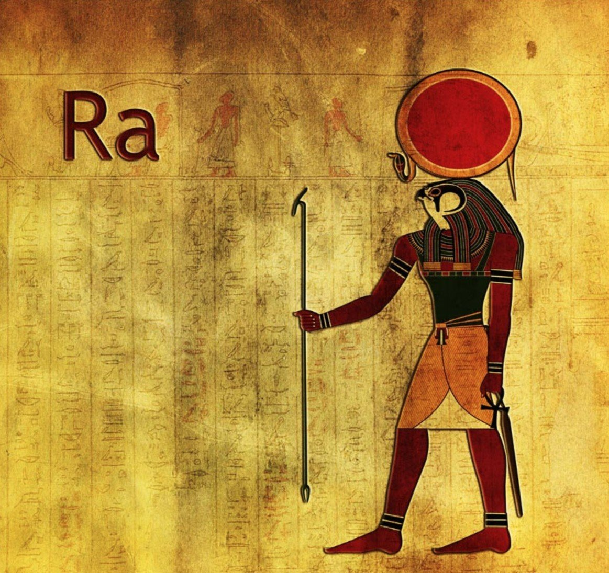

«Мифы и легенды о происхождении вселенной» — сборник историй и легенд о
том, как разные народы объясняли происхождение мира.

Древнеегипетский миф о сотворении мира богом Ра
Сама легенда звучит так:
Встал Атум на холм, выдохнул — и появился Шу, бог воздуха и пространства. Создал потом Атум и богиню воды Тефнут. Однако тьма была всё ещё непроглядной, и его дети потерялись в бескрайнем Нуне. На поиски он отправил своё правое Око, а пока оно бродило по бескрайней водной глади, создал новое. По одной из версий, первое стало Солнцем, а второе — Луной.
Когда же первоначальное Око вернулось с Шу и Тефнут, оно пришло в ярость, увидев свою замену. Чтобы успокоить его, Атум поместил Око себе на лоб и превратил его в огнедышащую змею урей, которая стала символом власти и защиты от хаоса для всех фараонов. От радости воссоединения Атум заплакал. Слёзы упали на прах холма Бен-Бен и превратились в людей.
От Шу и Тефнут родились бог земли Геб и богиня неба Нут, которые, в свою очередь, стали родителями знаменитых Осириса, Исиды, Сета и Нефтиды. Вместе с Атумом, Шу и Тефнут они образовали Великую девятку (эннеаду) богов, которая и управляла Вселенной.
Китайский миф о сотворении мира
Изначально земля и небо были смешаны в хаосе, посередине которого возник Пань-гу. Каждый день небо (Ян) поднималось на 10 чи (около трёх метров), земля (Инь) становилась толще на те же 10 чи, а сам первопредок вырастал вместе с ними. Этот процесс длился 18 тысяч лет. Пань-гу менялся по девять раз на дню, стал титаном, чья мудрость превосходила небеса, а способности — земные просторы.
Когда Пань-гу умер, его тело преобразилось, чтобы наполнить созданный им мир:
дыхание стало ветром и облаками;
голос обратился в раскаты грома;
левый глаз стал Солнцем, а правый — Луной;
голова, руки и ноги превратились в четыре стороны света и пять великих священных гор;
кровь потекла реками;
плоть стала почвой;
волосы на голове и борода рассыпались звёздами;
волосы на теле превратились в травы и деревья;
кости и зубы стали залежами металлов и камней;
пот выпал живительным дождём;
паразиты на его теле, подхваченные ветром, дали начало человечеству.
Славянский миф о сотворении мира
У славян всё началось не с воды или огня, а с полной, кромешной тьмы, заключённой в космическом яйце. Здесь пребывал один лишь Род — непостижимая сила, источник и причина всего сущего. Из яйца Рода освободила Любовь, которую ещё называют Ладой, — основа мироздания.
Род творил мир, буквально выходя из самого себя:
из своего лица он сотворил Солнце;
из груди — Луну;
из очей — звёзды небесные;
из дыхания родились ветры;
из слёз пошёл дождь, снег и град;
его голос стал громом и молнией.
Так Род создал небесный мир и наполнил его стихиями. Но Земля была скрыта где-то в глубинах изначального океана. И здесь ключевую роль сыграл Сварог, рождённый Родом и наделённый его могучей силой. Именно Сварог стал устроителем видимого мира. Увидев, что Земля сокрыта в воде, он поручил добыть её серой утке, которую создал из океанской пены.
После двух неудачных попыток Род ударил в утку молнией, тем самым наделив её силой. На третий раз утка принесла в клюве горсть земли. Сварог помял эту землю в ладони, ветер сдул её в синее море, где она, обогретая солнцем и остуженная луной, превратилась в прочную твердь. Чтобы Земля не ушла обратно в пучину, Род поселил под ней мощного змея Юшу.
Вавилонский миф о сотворении мира
В начале времён, когда не было ни неба, ни земли, прародители Абзу (пресные воды) и Тиамат (солёные воды) породили богов. Шум молодых богов раздражал Абзу, и он решил их убить. Мудрый Эа, сын Ану, разгадал замысел, усыпил Абзу и занял его место. В глубинах пресноводной бездны (Абзу) Эа и Дамкина родили Мардука, наделённого огромной силой и мудростью.
Первородные боги упрекали Тиамат в бездействии, и она, вместе с Кингу (своим первенцем) и чудовищами, решила сразиться с богами. Эа и Ану не смогли остановить Тиамат. Тогда Эа обратился к Мардуку. Мардук согласился на битву при условии, что в случае победы получит высшую власть. Боги согласились и даровали ему оружие.
Мардук вызвал бурю, отправился на битву с Тиамат, набросил на неё сеть, пустил ветры в пасть и поразил стрелой в сердце. Воины Тиамат разбежались, но Мардук поймал их, включая Кингу, у которого забрал «Таблицы судеб». Мардук сокрушил Тиамат, разрубил её тело на части.
Из одной половины Тиамат Мардук создал небо, звёзды и законы движения светил. Из другой половины и праха он сотворил землю, горы, реки Тигр и Евфрат. Мардук передал «Таблицы судеб» Ану, и боги признали его своим царём.
Брахма сотворил земную и небесную твердь, а также всё сущее между ними. Своим духом он породил богов, давших начало демонам, людям и иным существам, хотя другие предания гласят, что многие боги явились в мир сами, когда он был готов принять их силу. Среди детей Брахмы выделяются бог света и богиня ночи: соединенные нерушимым браком, они стали едины, и с тех пор свет и тьма немыслимы друг без друга.
Также Брахма создал время, установив разные сроки для людей и небожителей. Жизнь человечества движется циклами — Махаюгами по 12 тысяч лет. К концу каждой эпохи мир изнашивается под бременем несовершенств и грехов, требуя обновления, которое приносит Шива. Время богов течет иначе: их год равен 360 людским годам, а один лишь день Брахмы охватывает сотни тысяч божественных Махаюг.
Замыкает великую троицу индуизма — Махадэва — всемилостивый Вишну, блюститель правды и хранитель Вселенной. Хотя все боги велики, Вишну, Брахма и Шива почитаются превыше остальных. Сотворенный Брахмой, Вишну обрел дар воплощаться в различных аватаров. Примечательно, что его первые облики — рыба, черепаха и вепрь — фактически соответствуют стадиям биологической эволюции позвоночных.
Японский миф о сотворении мира
По синтоистским верованиям, сначала мир представлял собой хаотическую массу, похожую на медузу. Затем появились первые боги — ками, а после — Идзанаги и Идзанами, бог и богиня, призванные упорядочить мир. Стоя на Плавающем небесном мосту, они опустили в океан хаоса украшенное драгоценностями копьё. Когда они подняли его, капли солёной воды, упавшие с острия, застыли и образовали первый остров — Оногоро. Сойдя на сушу, боги вступили в брак и породили архипелаг Японию и множество других богов. Когда Идзанаги и Идзанами ушли, миром остались править их дети — божества Аматэрасу, Цукуёми и Сусаноо.
Древнегреческий миф о сотвроении мира
Из Хаоса произошла и богиня Земля – Гея. Широко раскинулась она, могучая, дающая жизнь всему, что живет и растет на ней. Далеко же под Землей, так далеко, как далеко от нас необъятное, светлое небо, в неизмеримой глубине родился мрачный Тартар ужасная бездна, полная вечной тьмы. Из Хаоса, источника жизни, родилась и могучая сила, все оживляющая Любовь – Эрос.
Начал создаваться мир. Безграничный Хаос породил Вечный Мрак – Эреб и темную Ночь – Нюкту. А от Ночи и Мрака произошли вечный Свет – Эфир и радостный светлый День – Гемера. Свет разлился по миру, и стали сменять друг друга ночь и день.
Могучая, благодатная Земля породила беспредельное голубое Небо – Урана, и раскинулось Небо над Землей. Гордо поднялись к нему высокие Горы, рожденные Землей, и широко разлилось вечно шумящее Море.
Уран – Небо – воцарился в мире. Он взял себе в жены благодатную Землю. Шесть сыновей и шесть дочерей – могучих, грозных титанов – было у Урана и Геи. Их сын, титан Океан, обтекающий, подобно безбрежной реке, всю землю, и богиня Фетида породили на свет все реки, которые катят свои волны к морю, и морских богинь – океанид. Титан же Гипперион и Тейя дали миру детей: Солнце – Гелиоса, Луну – Селену и румяную Зарю – розоперстую Эос (Аврора). От Астрея и Эос произошли все звезды, которые горят на темном ночном небе, и все ветры: бурный северный ветер Борей, восточный Эвр, влажный южный Нот и западный ласковый ветер Зефир, несущий обильные дождем тучи.
Кроме титанов, породила могучая Земля трех великанов – циклопов с одним огненным глазом посередине лба – и трех громадных, как горы, пятидесятиголовых великанов – сторуких (гекатонхейров), названных так потому, что сто рук было у каждого из них. Против их ужасной силы ничто не может устоять, их стихийная сила не знает предела. Сам Уран, боясь сторуких, связал их и низверг в глубину земли, где заключил в глубоком мраке и не позволил им выходить на свет. Они теперь неистовствуют в недрах земли, устраивая извержения огнедышащих гор и землетрясения.